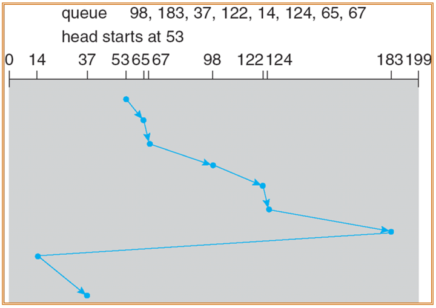
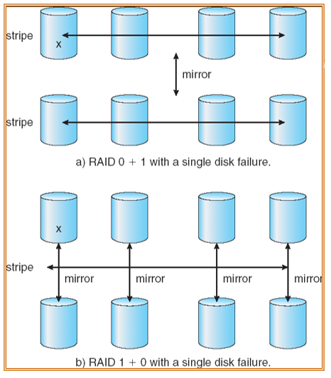

Mass-Storage Systems
约 2241 个字 13 张图片 预计阅读时间 15 分钟
海量存储结构概述
- 磁盘为现代计算机提供了大量的二次存储器
- Transfer rate：数据在驱动器和计算机之间流动的速率
- Positioning time(随机访问时间)是将磁盘臂移动到所需柱面的时间(seek time)和在磁头下旋转到所需扇区的时间(旋转延迟rotation latency)。
- 磁盘可以移动
- 驱动器通过I/O总线连接到计算机上
- 总线是不同的，包括EIDE， ATA， SATA， USB，光纤通道，SCSI
- 计算机中的主控制器(host controller)使用总线与内置在驱动器或存储阵列中的磁盘控制器通信
c表示在哪一个环上，p表示在哪个层上
磁头和盘面是不直接接触的，中间会有一层空气薄膜
非易失性设备
SSD使用的是非易失性设备，访问速度非常块，但是重复的擦除修改容易造成磨损。
磁盘结构
- 对操作系统来说，磁盘驱动器被排列成大的一维逻辑块阵列，其中逻辑块是最小的传输单元。
- 逻辑块的一维阵列按顺序映射到磁盘的扇区中。
- 扇区0是最外层圆柱上最外侧轨道的第一个扇区。
- 映射按顺序进行，首先是该轨道，然后是该圆柱体中的其余轨道，然后是从最外层到最内层的其余圆柱体。
磁盘最外侧的编号为0，越往里编号越大
磁盘附件
Network-Attached Storage
网络附加存储(NAS)是通过网络而不是通过本地连接提供的存储。
New iSCSI protocol uses IP network to carry the SCSI protocol
磁盘页的获取
- 获取一个磁盘页所需时间包括
- seek time寻址时间(moving arms to position disk head on track)
- rotational delat旋转等待(waiting for block to rotate under head)
- transfer time传输时间(actually moving data to/from disk surface)
只有seek time比较容易提高
硬件提高方式：将磁头臂分开，从而可以实现同时访问不同的磁道，也可以一个在访问的时候另一个在寻址，从而提高访问的效率
磁盘调度
磁盘调度的目的是降低平均调度寻道时间
- 访问时间有两个主要组成部分
- 寻道时间(seek time)是磁盘将磁头移动到包含所需扇区的圆柱体的时间。
- 旋转延迟(rotational latency)是等待磁盘将所需扇区旋转到磁盘磁头的额外时间。
- 磁盘带宽是传输的总字节数，除以第一次服务请求和最后一次传输完成之间的总时间。
- 计算的时候可以近似使用Seek time ≈ seek distance
假设现在有一个调度情况，当前的指针指向53号块，接下里的调度流程是98, 183, 37, 122, 14, 124, 65, 67
First-come-first-serve(FCFS)
根据图中的这种调度方式可以看出，磁盘头总计移动了640个柱面。
Shortest-seek-time-first(SSTF)
从当前头部位置选择具有最小寻道时间的请求
SSTF调度是SJF调度的一种形式，但是可能导致某些请求无法响应(饥饿问题)
根据图中的这种调度方式可以看出，磁盘头总计移动了236个柱面。
SCAN
也被称作电梯算法(elevator algorithm)：磁盘臂从磁盘的一端开始向另一端移动，并且为请求提供服务，到达另一端后移动的方式逆转然后继续服务。

Circular-SCAN(C-SCAN)
- 提供比SCAN更统一的等待时间
- 磁头从磁盘的一端移动到另一端，一边移动一边处理请求。但是，当它到达另一端时，它立即返回到磁盘的起点，在返回过程中不处理任何请求。
考试的时候如果考察seek time或者seek distance，需要加上返回的这个距离
C-LOOK
C-SCAN的一个版本：磁盘臂只执行目前方向上的最后一个请求，然后立即反转方向，而不执行到磁盘的末端。

磁盘调度算法的选择
- SCAN和C-SCAN对于在重负载磁盘的系统性能更好。
- 性能取决于请求的数量和类型，并且对磁盘服务的请求可能受到文件分配方法的影响。
- 磁盘调度算法应该作为操作系统的一个独立模块编写，允许在必要时用不同的算法替换它。
- 默认算法可以使用SSTF或LOOK。
问：什么样的调度算法适合SSD？
默认采用FCFS调度算法，因为SSD本身访问性能很高，而FCFS可以对等的对待每一个请求。
磁盘管理
- 低级格式化或物理格式化 — 将磁盘划分为磁盘控制器可以读写的扇区(并且添加校验码等信息)
- 要使用磁盘保存文件，操作系统仍然需要在磁盘上记录自己的数据结构
- 将磁盘划分为一组或多组柱面
- 逻辑格式化或“创建文件系统”
- 引导块初始化系统
- 引导程序存储在ROM中
- 引导加载程序(Bootstrap只用来找到磁盘第一个扇区中的bootstrap loader)
- 使用扇区保留方式来处理坏块
Master Boot Record(MBR)
MBR中包含启动代码(用来启动实际的操作系统)以及分区信息
交换空间管理
- 交换空间 - 虚拟内存使用磁盘空间作为主内存的扩展
- 交换空间可以从普通文件系统中分割出来，或者更常见的是交换空间可以在单独的磁盘分区中(效率更高)
RAID结构
RAID(Redundant Arrays of Independent Disks)指冗余磁盘阵列
可以实现文件的并行化读写，从而提高效率(对单个文件进行分割，从而存储到不同的磁盘上，最小的细分单位为1bit，但是通常的细分单位为block，因为是以block为单位进行读取的)
Mirroring：可以将一份数据重复存储在不同盘上防止丢失
Block interleaved parity：可以实现纠错，进而降低冗余的空间要求
RAID等级
目前常用的等级为：RAID0, RAID1以及RAID5
- RAID0 是没有冗余的，速度最快但是不够安全
- RAID1 备份存储，每一位都做了mirror
- RAID2 使用纠错码，纠错码在数据准备写入磁盘的时候计算并且写到纠错磁盘中(校验码计算比较复杂)，存储纠错码的空降需求较大并且读写开销较大
- RAID3 采用奇偶校验方式进行校验码计算，但是bit级的计算，P盘的读写的压力较大，并且一旦出错容易全部无法正常运行
- RAID4 块层面的检验码，P盘的压力有所降低
- RAID5 原数据存储与校验码存储混用，校验码交错放在不同的磁盘中，这样计算的压力就分散开来，不会让某一个磁盘的计算压力过大，并且其中任意单个盘出错还是可以纠错的
- RAID6 添加一个新的磁盘，同时采用两个不同的纠错算法
组合使用
- RAID 0+1：Stripe and then mirror
- 一块磁盘坏了，仍然可以数据恢复
- RAID 1+0：Mirror and then stripe

此时如果坏了多块磁盘
第一种方式不能坏两块磁盘，但是第二种方式允许不是一个镜像组中的磁盘损坏多块，或者说此时只要不是损坏了一个完整的镜像组，就依然能够获得正确的数据。
出现这种情况的原因是磁盘的镜像是需要整体镜像的，也就是说，对于一个单镜像组包含了两个磁盘的情况来说，如果想要将内容镜像到另外的两个磁盘中，需要同时将两个磁盘的所有数据镜像过去，而不能够仅仅只是镜像其中的一个磁盘。在这种情况下，如果是RAID01(假设此时共有4个磁盘，并且一开始的数据存放在其中的两个磁盘中)，并且第一个镜像组中的第一个磁盘损坏了，那么第二个镜像组中，无论是哪一个磁盘发生了损坏的情况，都会导致最终无法获得正确的数据
目前磁盘的转速并没有提高，为什么可以容纳的数据量却提高了？
磁盘中的数据密度提高了，但是数据出口的大小没有发生变换，所以此时数据的出口就已经变成了瓶颈